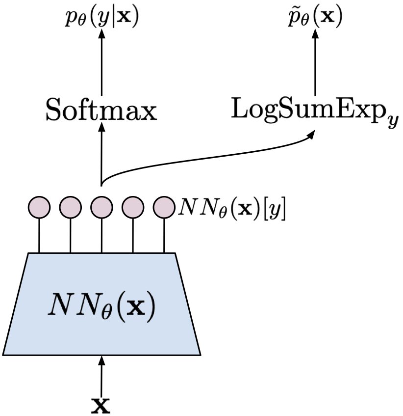

So far, we have discussed various deep generative models for modeling the marginal distribution over observable variables (e.g., images), $p(\mathbf{x})$, such as, autoregressive models (ARMs), flow-based models (flows, for short), Variational Auto-Encoders (VAEs), and hierarchical models like hierarchical VAEs and diffusion-based deep generative models (DDGMs). However, from the very beginning, we advocate for using deep generative modeling in the context of finding the joint distribution over observables and decision variables that is factorized as $p(\mathbf{x}, y) = p(y | \mathbf{x}) p(\mathbf{x})$. After taking the logarithm of the joint we obtain two additive components: $\ln p(\mathbf{x}, y) = \ln p(y | \mathbf{x}) + \ln p(\mathbf{x})$. We outlined how such a joint model could be formulated and trained in the hybrid modeling setting (see the post on hybrid modeling). The drawback of hybrid modeling is the necessity of weighting both distributions, i.e., $\ell (\mathbf{x}, y \lambda) = \ln p(y | \mathbf{x}) + \lambda \ln p(\mathbf{x})$, and for $\lambda \neq 1$ this objective does not correspond to the log-likelihood of the joint distribution. The question is whether it is possible to formulate a model to learn with $\lambda = 1$. Here, we will discuss a potential solution to this problem using probabilistic energy-based models (EBMs) (LeCun et al., 2006).
The history of EBMs is long and dates back to 80. of the previous century when models dubbed Boltzmann machines were proposed (Ackley et al., 1985; Smolensky, 1986). Interestingly, the idea behind Boltzmann machines is taken from statistical physics and was formulated by cognitive scientists. A nice mix-up, isn't it? In a nutshell, instead of proposing a specific distribution like Gaussian or Bernoulli, we can define an energy function, $E(\mathbf{x})$, that assigns a value (energy) to a given state. There are no restrictions on the energy function so you can already think of parameterizing it with neural networks. Then, the probability distribution could be obtained by transforming the energy to the unnormalized probability $e^{- E(\mathbf{x})}$ and normalizing it by $Z = \sum_{\mathbf{x}} e^{- E(\mathbf{x})}$ (a.k.a. a partition function), that yields the Boltzmann (also called Gibbs) distribution:
$$ p(\mathbf{x}) = \frac{e^{- E(\mathbf{x})}}{ Z } . $$If we consider continuous random variables, then the sum sign should be replaced by the integral. In physics, the energy is scaled by an inverse of temperature (Jaynes, 2003), however, we skip it to keep the notation uncluttered. Understanding how the Boltzmann distribution works is relatively simple. Imagine a grid 5-by-5. Then, assign some value (energy) to each of the 25 points where a larger value means that a point has higher energy. Exponentiating the energy ensures that we do not obtain negative values. To calculate the probability for each point, we need to divide all exponentiated energies by their sum, in the same way how we do it for calculating softmax. In the case of continuous random variables, we must normalize by calculating an integral (i.e., a sum over all infinitesimal regions). For instance, the Gaussian distribution could be also expressed as the Boltzmann distribution with an analytically tractable partition function and the energy function of the following form:
$$ E(x; \mu, \sigma^2) = \frac{1}{2\sigma^2} (x - \mu)^2, $$that yields:
\begin{align} p(x) &= \frac{e^{- E(x)}}{\int e^{- E(x)} \mathrm{d} x} \\ &= \frac{ e^{\frac{1}{2\sigma^2} (x - \mu)^2} }{ \sqrt{ 2\pi \sigma^2 } } . \end{align}In practice, most energy functions do not result in a nicely computable partition function. And, typically, the partition function is the key element that is problematic in learning energy-based models. The second problem is that, in general, it is hard to sample from such models. Why? Well, we know the probability for each point but there is no generative process like in ARMs, flows, or VAEs. It unclear how to start and what is the graphical model for an EBM. We can think of the EBM as a box that for a given $\mathbf{x}$ can tell us the (unnormalized) probability of that point. Notice that the energy function does not distinguish variables in any way, it does not care about any structure in $\mathbf{x}$. It says: Give me $\mathbf{x}$ and I will return the value. That's it! In other words, the energy function defines mountains and valleys over the space of random variables.
A curious reader (yes, I am referring to you!) may ask why we want to bother with EBMs. Previously discussed models are at least tractable and comprehensible in the sense that some stochastic dependencies are defined. Now we suddenly invert the logic and say that we do not care about modeling the structure and instead we want to model an energy function that returns unnormalized probabilities. Is it beneficial? Yes, for at least three reasons. First, in principle, the energy function is unconstrained, it could be any function! Yes, you have probably guessed already, it could be a neural network! Second, notice that the energy function could be multimodal without being defined as such (i.e., opposing to a mixture distribution). Third, there is no difference if we define it over discrete or continuous variables. I hope you see now that EBMs have a lot of advantages! They possess a lot of deficiencies too but hey, let us stick to the positive aspects before we start, ok?
Model formulation As mentioned earlier, we formulate an energy function with some parameters $\theta$ over observable and decision random variables, $E(\mathbf{x}, y;\theta)$, that assigns a value (an energy) to a pair $(\mathbf{x}, y)$ where $\mathbf{x} \in \mathbb{R}^{D}$ and $y \in \{0, 1, \ldots, K-1\}$. Let $E(\mathbf{x}, y;\theta)$ be parameterized by a neural network $NN_{\theta}(\mathbf{x})$ that returns $K$ values: $NN_{\theta}: \mathbb{R}^{D} \rightarrow \mathbb{R}^{K}$. In other words, we can define the energy as follows:
$$ E(\mathbf{x}, y; \theta) = - NN_{\theta}(\mathbf{x})[y] $$where we indicate by $[y]$ the specific output of the neural net $NN_{\theta}(\mathbf{x})$. Then, the joint probability distribution is defined as the Boltzmann distribution:
\begin{align} p_{\theta}(\mathbf{x}, y) &= \frac{ \exp\{NN_{\theta}(\mathbf{x})[y]\} }{ \sum_{\mathbf{x}, y} \exp\{NN_{\theta}(\mathbf{x})[y] \} } \\ &= \frac{ \exp\{NN_{\theta}(\mathbf{x})[y]\} }{ Z_{\theta} } , \end{align}where we define $Z_{\theta} = \sum_{\mathbf{x}, y} \exp\{NN_{\theta}(\mathbf{x})[y] \}$.
Since we have the joint distribution, we can calculate the marginal distribution and the conditional distribution. First, let us take a look at the marginal $p(\mathbf{x})$. Applying the sum rule to the joint distribution yields:
\begin{align} p_{\theta}(\mathbf{x}) &= \sum_{y} p_{\theta}(\mathbf{x}, y) \\ &= \frac{ \sum_{y} \exp\{NN_{\theta}(\mathbf{x})[y]\} }{ \sum_{\mathbf{x}, y} \exp\{NN_{\theta}(\mathbf{x})\}[y] } \\ &= \frac{ \sum_{y} \exp\{NN_{\theta}(\mathbf{x})[y]\} }{ Z_{\theta} } . \end{align}Let us notice that we can express this distribution differently. First, we can re-write the numerator in the following manner:
\begin{align} \sum_{y} \exp\{NN_{\theta}(\mathbf{x})[y]\} &= \exp \left\{ \log \left( \sum_{y} \exp\{NN_{\theta}(\mathbf{x})[y]\} \right) \right\} \\ &= \exp \left\{ \mathrm{LogSumExp}_{y}\{NN_{\theta}(\mathbf{x})[y]\} \right\} \end{align}where we define $\mathrm{LogSumExp}_{y}\{f(y)\} = \ln \sum_y \exp\{f(y)\}$. In other words, we can say that the energy function of the marginal distribution is expressed as $-\mathrm{LogSumExp}_{y}\{NN_{\theta}(\mathbf{x})[y]\}$. Then, the marginal distribution could be defined as follows:
$$ p_{\theta}(\mathbf{x}) = \frac{ \exp \left\{ \mathrm{LogSumExp}_{y}\{NN_{\theta}(\mathbf{x})[y]\} \right\} }{ Z_{\theta} } . $$Now, we can calculate the conditional distribution $p_{\theta}(y|\mathbf{x})$. We know that $p_{\theta}(\mathbf{x}, y) = p_{\theta}(y|\mathbf{x})\ p_{\theta}(\mathbf{x})$ thus:
\begin{align} p_{\theta}(y|\mathbf{x}) &= \frac{ p_{\theta}(\mathbf{x}, y) }{ p_{\theta}(\mathbf{x}) } \\ &= \frac{ \frac{ \exp\{NN_{\theta}(\mathbf{x})[y]\} }{ Z_{\theta} } }{ \frac{\sum_{y} \exp\{NN_{\theta}(\mathbf{x})[y]\}}{ Z_{\theta} } } \\ &= \frac{ \exp\{NN_{\theta}(\mathbf{x})[y]\} }{ \sum_{y} \exp\{NN_{\theta}(\mathbf{x})[y]\} } . \end{align}The last line should resemble something, do you see it? Yes, you are right, it is the softmax function! We have shown that the energy-based model could be used either as a classifier or a marginal distribution. And it is enough to define a single neural network for that! Isn't it beautiful? The same observations were made in (Grathwohl et al., 2020) that any classifier could be seen as an energy-based model.
Interestingly, the logarithm of the joint distribution is the following:
\begin{align} \ln p_{\theta}(\mathbf{x}, y) &= \ln p_{\theta}(y|\mathbf{x}) + \ln p_{\theta}(\mathbf{x}) \\ &= \ln \frac{ \exp\{NN_{\theta}(\mathbf{x})[y]\} }{ \sum_{y} \exp\{NN_{\theta}(\mathbf{x})[y]\} } + \ln \frac{ \sum_{y} \exp\{NN_{\theta}(\mathbf{x})[y]\} }{ Z_{\theta} } \\ &= \ln \mathrm{softmax}\{NN_{\theta}(\mathbf{x})[y]\} + \Big{(} \mathrm{LogSumExp}_{y}\{NN_{\theta}(\mathbf{x})[y]\} - \ln Z_{\theta} \Big{)} \end{align}where we define $\mathrm{LogSumExp}_{y}\{f(y)\} = \ln \sum_y \exp\{f(y)\}$. We clearly see that the model requires a shared neural network that is used for calculating both distributions. To obtain a specific distribution, we pick the final activation function. The model is schematically presented in Figure 1.

Training We have a single neural network to train and the training objective is the logarithm of the joint distribution. Since the training objective is a sum of the logarithm of the conditional $p_{\theta}(y|\mathbf{x})$ and the logarithm the marginal $p_{\theta}(\mathbf{x})$, calculating the gradient with respect to the parameters $\theta$ requires taking the gradient of each of the component separately. We know that there is no problem with learning a classifier so let us take a closer look at the second component, namely:
\begin{align} \nabla_{\theta} \ln p_{\theta}(\mathbf{x}) &= \nabla_{\theta} \mathrm{LogSumExp}_{y}\{NN_{\theta}(\mathbf{x})[y]\} - \nabla_{\theta} \ln Z_{\theta} \\ &= \nabla_{\theta} \mathrm{LogSumExp}_{y}\{NN_{\theta}(\mathbf{x})[y]\} - \nabla_{\theta} \ln \sum_{\mathbf{x}} \exp \left\{ \mathrm{LogSumExp}_{y}\{NN_{\theta}(\mathbf{x})[y]\} \right\} \\ &= \nabla_{\theta} \mathrm{LogSumExp}_{y}\{NN_{\theta}(\mathbf{x})[y]\} - \sum_{\mathbf{x}'} \frac{ \exp \left\{ \mathrm{LogSumExp}_{y}\{NN_{\theta}(\mathbf{x}')[y]\} \right\} }{\sum_{\mathbf{x}'', y''} \exp \{NN_{\theta}(\mathbf{x''})[y'']\} } \nabla_{\theta} \mathrm{LogSumExp}_{y}\{NN_{\theta}(\mathbf{x}')[y]\}\\ &= \nabla_{\theta} \mathrm{LogSumExp}_{y}\{NN_{\theta}(\mathbf{x})[y]\} - \mathbb{E}_{\mathbf{x}' \sim p_{\theta}(\mathbf{x})} \left[ \nabla_{\theta} \mathrm{LogSumExp}_{y}\{NN_{\theta}(\mathbf{x}')[y]\} \right] \end{align}We can decipher what has just happend here. The gradient of the first part, $\nabla_{\theta} \mathrm{LogSumExp}_{y}\{NN_{\theta}(\mathbf{x})[y]\}$, is calculated for a given data point $\mathbf{x}$. The log-sum-exp function is differentiable, so we can apply autograd tools. However, the second part, $\mathbb{E}_{\mathbf{x}' \sim p_{\theta}(\mathbf{x})} \left[ \nabla_{\theta} \mathrm{LogSumExp}_{y}\{NN_{\theta}(\mathbf{x}')[y]\} \right]$, is a totally different story for two reasons:
Thus, the only problem lies in the expected value. Typically, it is approximated by Monte Carlo samples, however, it is not clear how to sample effectively and efficiently from an EBM. (Grathwohl et al., 2020) proposes to use the Langevine dynamics (Welling & Teh, 2011) that is an MCMC method. The Langevine dynamics in our case starts with a randomly initialized $\mathbf{x}_{0}$ and then uses the information about the landscape of the energy function (i.e., the gradient) to seek for new $\mathbf{x}$, that is:
$$ \mathbf{x}_{t+1} = \mathbf{x}_{t} + \alpha \nabla_{\mathbf{x}_{t}} \mathrm{LogSumExp}_{y}\left\{ NN_{\theta}(\mathbf{x})[y] \right\} + \sigma \cdot \epsilon, $$where $\alpha > 0$, $\sigma > 0$, and $\epsilon \sim \mathcal{N}(0,I)$. The Langevine dynamics could be seen as the stochastic gradient descent in the observable space with a small Gaussian noise added at each step. Once we apply this procedure for $\eta$ steps, we can approximate the gradient as follows:
$$ \nabla_{\theta} \ln p_{\theta}(\mathbf{x}) \approx \nabla_{\theta} \mathrm{LogSumExp}_{y}\{NN_{\theta}(\mathbf{x})[y]\} - \nabla_{\theta} \mathrm{LogSumExp}_{y}\{NN_{\theta}(\mathbf{x}_{\eta})[y]\} $$where $\mathbf{x}_{\eta}$ denotes the last step of the Langevine dynamics procedure.
We are ready to put it all together! Please remember that our training objective is the following:
$$ \ln p_{\theta}(\mathbf{x}, y) = \ln \mathrm{softmax}\{NN_{\theta}(\mathbf{x})[y]\} + \Big{(} \mathrm{LogSumExp}_{y}\{NN_{\theta}(\mathbf{x})[y]\} - \ln Z_{\theta} \Big{)} $$where the first part is for learning a classifier, and the second part is for learning a generator (so to speak). As a result, we can say we have a sum of two objectives for a fully shared model. The gradient with respect to the parameters is the following:
$$ \nabla_{\theta} \ln p_{\theta}(\mathbf{x}, y) = \nabla_{\theta} \ln \mathrm{softmax}\{NN_{\theta}(\mathbf{x})[y]\} + \nabla_{\theta} \mathrm{LogSumExp}_{y}\{NN_{\theta}(\mathbf{x})[y]\} - \mathbb{E}_{\mathbf{x}' \sim p_{\theta}(\mathbf{x})} \left[ \nabla_{\theta} \mathrm{LogSumExp}_{y}\{NN_{\theta}(\mathbf{x}')[y]\} \right] . $$The last two components come from calculating the gradient of the marginal distribution. Remember that the problematic part is only the last component! We will approximate this part using the Langevine dynamics (i.e., a sampling procedure) and a single sample. The final training procedure is the following:
Notice that $L_{clf}(\theta)$ is nothing else than the cross-entropy loss, and $L_{gen}(\theta)$ is a (crude) approximation to the log-marginal distribution over $\mathbf{x}$'s.
What do we need to code then? First, we must specify the neural network that defines the energy function (let us call it the energy net). Classifying using the energy net is rather straightforward. The main problematic part is sampling from the model using the Langevine dynamics. Fortunately, the autograd tools allow us to easily access the gradient with respect $\mathbf{x}$! In fact, it is a single line in the code below. Then we require writing a loop to run the Langevine dynamics for $\eta$ iterations with the steps size $\alpha$ and the noise level equal $\sigma$. In the code, we assume the data are normalized and scaled to $[-1, 1]$ similarly to (Grathwohl et al., 2020).
The full code (with auxiliary functions) that you can play with is available here: [link].
class EBM(nn.Module):
def __init__(self, energy_net, alpha, sigma, ld_steps, D):
super(EBM, self).__init__()
print('EBM by JT.')
# the neural net used by the EBM
self.energy_net = energy_net
# the loss for classification
self.nll = nn.NLLLoss(reduction='none') # it requires log-softmax as input!!
# hyperparams
self.D = D
self.sigma = sigma
self.alpha = torch.FloatTensor([alpha])
self.ld_steps = ld_steps
def classify(self, x):
f_xy = self.energy_net(x)
y_pred = torch.softmax(f_xy, 1)
return torch.argmax(y_pred, dim=1)
def class_loss(self, f_xy, y):
# - calculate logits (for classification)
y_pred = torch.softmax(f_xy, 1)
return self.nll(torch.log(y_pred), y)
def gen_loss(self, x, f_xy):
# - sample using Langevine dynamics
x_sample = self.sample(x=None, batch_size=x.shape[0])
# - calculate f(x_sample)[y]
f_x_sample_y = self.energy_net(x_sample)
return -(torch.logsumexp(f_xy, 1) - torch.logsumexp(f_x_sample_y, 1))
def forward(self, x, y, reduction='avg'):
# =====
# forward pass through the network
# - calculate f(x)[y]
f_xy = self.energy_net(x)
# =====
# discriminative part
# - calculate the discriminative loss: the cross-entropy
L_clf = self.class_loss(f_xy, y)
# =====
# generative part
# - calculate the generative loss: E(x) - E(x_sample)
L_gen = self.gen_loss(x, f_xy)
# =====
# Final objective
if reduction == 'sum':
loss = (L_clf + L_gen).sum()
else:
loss = (L_clf + L_gen).mean()
return loss
def energy_gradient(self, x):
self.energy_net.eval()
# copy original data that doesn't require grads!
x_i = torch.FloatTensor(x.data)
x_i.requires_grad = True # WE MUST ADD IT, otherwise autograd won't work
# calculate the gradient
x_i_grad = torch.autograd.grad(torch.logsumexp(self.energy_net(x_i), 1).sum(), [x_i], retain_graph=True)[0]
self.energy_net.train()
return x_i_grad
def langevine_dynamics_step(self, x_old, alpha):
# Calculate gradient wrt x_old
grad_energy = self.energy_gradient(x_old)
# Sample eta ~ Normal(0, alpha)
epsilon = torch.randn_like(grad_energy) * self.sigma
# New sample
x_new = x_old + alpha * grad_energy + epsilon
return x_new
def sample(self, batch_size=64, x=None):
# - 1) Sample from uniform
x_sample = 2. * torch.rand([batch_size, self.D]) - 1.
# - 2) run Langevine Dynamics
for i in range(self.ld_steps):
x_sample = self.langevine_dynamics_step(x_sample, alpha=self.alpha)
return x_sample
After running the code with an MLP-based energy net, and the following values of the hyperparameters $\alpha=1$, $\sigma=0.01$, and $\eta=20$, we can expect results like in Figure 2.
A B C D
Figure 2. Examples of outcomes of the training: A Randomly selected real images. B Unconditional generations from the EBM after applying $\eta=20$ steps of the Langevine dynamics. C An example of a validation curve of the objective ($L_{clf} + L_{gen}$). D An example of a validation curve of the generative objective $L_{gen}$.
The paper of (Grathwohl et al., 2020) is definitely a milestone in the EBM literature because it shows that we can use any energy function parameterized by a neural network. However, to get to that point there was a lot of work on the energy-based models.
Boltzmann Machines The idea of defining a model through the energy function is the foundation of a broad family of Boltzmann machines (BMs) (Ackley et al., 1985; Hinton & Sejnowski, 1986)). The Boltzmann machines define an energy function as follows:
$$ E(\mathbf{x}; \theta) = - \left( \mathbf{x}^{\top} \mathbf{W} \mathbf{x} + \mathbf{b}^{\top} \mathbf{x} \right) $$where $\theta = \{\mathbf{W}, \mathbf{b}\}$ and $\mathbf{W}$ is the weight matrix and $\mathbf{b}$ is the bias vector (bias weights), which is the same as that in Hopfield networks and Ising models. The problem with BM is that they are hard to train (due to the partition function).
Restricted Boltzmann Machines An interesting subgroup of Boltzmann machines constitute models with additional latent variables and connections only between observables and latents. The so-called Restricted Boltzmann machines (RBMs) defines the energy function in the following form (Hinton, 2012; Smolensky, 1986; Salakhutdinov, 2015):
$$ E(\mathbf{x}, \mathbf{h}; \theta) = - \left( \mathbf{x}^{\top} \mathbf{W} \mathbf{h} + \mathbf{b}^{\top} \mathbf{x} + \mathbf{c}^{\top} \mathbf{h} \right) . $$If the latent variables are binary, then it turns out that the conditional distribution over latents are defined by sigmoids (Hinton, 2012 Salakhutdinov, 2015):
\begin{align} p(\mathbf{h} | \mathbf{x}) &= \prod_{m} p(h_{m} | \mathbf{x}) \\ &= \prod_{m} \mathrm{sigm}\left( \mathbf{W}_{:,m}^{\top} \mathbf{h} + \mathbf{c}_{m} \right) \end{align}where $\mathbf{W}_{:,m}$ denotes the $m$-th column of the weight matrix.
This bipartite structure (i.e., there is no connection among observables and no connections among latents) could be used for an efficient training procedure called contrastive divergence (Hinton, 2002) that takes advantage of block Gibbs sampling. A chain is initialized either at a random point or a sample of latents and then, conditionally, the other set of variables are trained. Similar to the ping-pong game, we sample some variables given the others until convergence or until we decide to stop.
RBMs possess a couple of useful traits. First, the bipartite structure helps training. Second, the distribution over latent variables could be calculated analytically. Moreover, it could be seen as being parameterized by logistic regression. That is an interesting fact that the sigmoid function arises naturally from the definition of the energy function! Third, the restrictions among connections show that we can still build powerful models that are (partially) analytically tractable. This opened a new research direction that aimed for formulating models with more sophisticated structures like spike-and-slab RBMs (Courville et al., 2011) and higher-order RBMs ((Tomczak & Gonczarek, 2017; Memisevic & Hinton, 2010), or RBMs for categorical observables (Salakhutdinov et al, 2007) or real-valued observables (Cho et al., 2013). Moreover, RBMs could be also modified to handle temporal data (Sutskever et al., 2009) that could be applied to, e.g., human motion tracking (Taylor et al., 2010). The precursor of the idea presented in (Grathwohl et al., 2020) was the work on classification RBMs (Larochelle, H., & Bengio, 2012; Larochelle et al., 2012). The training of RBMs is based on the MCMC techniques, e.g., the contrastive divergence algorithm. However, RBMs could be trained to achieve specific features by regularization (Tomczak, 2016) or other learning algorithms like the Perturb-and-MAP method (Tomczak et al., 2019), minimum probability flow (Sohl-Dickstein et al., 2011), or other algorithms (Marlin et al., 2010; Song & Kingma, 2021).
Deep Boltzmann Machines A natural extension of BMs are models with a deep architecture or hierarchical BMs. As indicated by many, the idea of hierarchical models plays a crucial role in AI (Bengio, 2007), therefore, there are many extensions of BMs with hierarchical (deep) architectures (Cho et al., 2013; Lee et al., 2009; Salakhutdinov, 2015).
Training of deep BMs is even more challenging due to the complexity of the partition function (Salakhutdinov & Murray, 2008). One of the main approaches to the training of deep BMs relies on treating each pair of consecutive layers as an RBM and training them layer by layer where the layer at the lower layer is treated as observed (Salakhutdinov, 2015). This procedure was successfully applied in the seminal paper on unsupervised pre-training of neural nets (Hinton & Salakhutdinov, 2006).
Approximating the partition function The crucial quantity in the EBMs is the partition function because it allows calculating the Boltzmann distribution. Unfortunately, summing over all values of random variables is computationally infeasible. However, we can use one of the available approximation techniques:
Some of the approximations are useful for specific BMs, e.g., BMs with binary variables, BMs with a specific structure. In general, however, approximating the partition function remains an open question and is the main road-blocker for using EMBs in practice and on a large scale.
EBMs are the future? There is definitely a lot of potential in EBMs for at least two reasons:
However, there is one main problem that has not been yet solved: The calculation of $p(\mathbf{x})$. As I claim all the time, the deep generative modeling paradigm is useful not only because we can synthesize nice-looking images but rather because an AI system can assess the uncertainty of the surrounding environment and share this information with us or other AI systems. Since calculating the marginal distribution in EBMs is troublesome, it is doubtful we can use these models in many applications. However, it is an extremely interesting research direction, and figuring out how to efficiently calculate the partition function and how to efficiently sample from the model is crucial for training powerful EBMs.
(Ackley et al., 1985) Ackley, D. H., Hinton, G. E., & Sejnowski, T. J. (1985). A learning algorithm for Boltzmann machines. Cognitive science, 9(1), 147-169.
(Bengio, 2007) Bengio, Y. (2007). Learning deep architectures for Al. Foundations and Trends in Machine Learning.
(Cho et al., 2013) Cho, K. H., Raiko, T., Ilin, A. (2013). Gaussian-bernoulli Deep Boltzmann Machine. In The 2013 International Joint Conference on Neural Networks (IJCNN) (pp. 1-7). IEEE.
(Courville et al., 2011) Courville, A., Bergstra, J., Bengio, Y. (2011). A spike and slab restricted Boltzmann machine. In Proceedings of the fourteenth AISTATS (pp. 233-241).
(Grathwohl et al., 2020) Grathwohl, W., Wang, K. C., Jacobsen, J. H., Duvenaud, D., Norouzi, M., Swersky, K. (2020). Your classifier is secretly an energy based model and you should treat it like one. ICLR 2020.
(Grathwohl et al., 2021) Grathwohl, W., Wang, K. C., Jacobsen, J. H., Duvenaud, D., & Zemel, R. (2020, November). Learning the Stein discrepancy for training and evaluating energy-based models without sampling. In International Conference on Machine Learning (pp. 3732-3747). PMLR.
(Hazan & Jaakkola, 2012) Hazan, T., & Jaakkola, T. (2012, June). On the partition function and random maximum a-posteriori perturbations. In Proceedings of the 29th International Coference on International Conference on Machine Learning (pp. 1667-1674).
(Hinton, 2002) Hinton, G. E. (2002). Training products of experts by minimizing contrastive divergence. Neural computation, 14(8), 1771-1800.
(Hinton, 2012) Hinton, G. E. (2012). A practical guide to training restricted Boltzmann machines. In Neural networks: Tricks of the trade (pp. 599-619). Springer, Berlin, Heidelberg.
(Hinton & Salakhutdinov, 2006) Hinton, G. E., Salakhutdinov, R. R. (2006). Reducing the dimensionality of data with neural networks. science, 313(5786), 504-507.
(Hinton & Sejnowski, 1986) Hinton, G. E., & Sejnowski, T. J. (1986). Learning and relearning in Boltzmann machines. Parallel distributed processing: Explorations in the microstructure of cognition, 1(282-317), 2.
(Jaynes, 2003) Jaynes, E. T. (2003). Probability theory: The logic of science. Cambridge University Press.
(Larochelle, H., & Bengio, 2012) Larochelle, H., Bengio, Y. (2008). Classification using discriminative restricted Boltzmann machines. In Proceedings of the 25th ICML (pp. 536-543).
(Larochelle et al., 2012) Larochelle, H., Mandel, M., Pascanu, R., & Bengio, Y. (2012). Learning algorithms for the classification restricted boltzmann machine. The Journal of Machine Learning Research, 13(1), 643-669.
(LeCun et al., 2006) LeCun, Y., Chopra, S., Hadsell, R., Ranzato, M., Huang, F. (2006). A tutorial on energy-based learning. Predicting structured data, 1(0).
(Lee et al., 2009) Lee, H., Grosse, R., Ranganath, R., & Ng, A. Y. (2009). Convolutional deep belief networks for scalable unsupervised learning of hierarchical representations. In Proceedings of the 26th ICML (pp. 609-616).
(Marlin et al., 2010) Marlin, B., Swersky, K., Chen, B., & Freitas, N. (2010). Inductive principles for restricted Boltzmann machine learning. In Proceedings of the thirteenth international conference on artificial intelligence and statistics (pp. 509-516). JMLR Workshop and Conference Proceedings.
(Memisevic & Hinton, 2010) Memisevic, R., & Hinton, G. E. (2010). Learning to represent spatial transformations with factored higher-order Boltzmann machines. Neural Computation, 22(6), 1473-1492.
(Salakhutdinov, 2015) Salakhutdinov, R. (2015). Learning deep generative models. Annual Review of Statistics and Its Application, 2, 361-385.
(Salakhutdinov et al, 2007) Salakhutdinov, R., Mnih, A., & Hinton, G. (2007). Restricted Boltzmann machines for collaborative filtering. In Proceedings of the 24th international conference on Machine learning (pp. 791-798).
(Salakhutdinov & Murray, 2008) Salakhutdinov, R., Murray, I. (2008). On the quantitative analysis of deep belief networks. In Proceedings of the 25th ICML (pp. 872-879).
(Smolensky, 1986) Smolensky, P. (1986). Information processing in dynamical systems: foundations of harmony theory. In Parallel distributed processing: explorations in the microstructure of cognition, vol. 1: foundations (pp. 194-281).
(Sohl-Dickstein et al., 2011) Sohl-Dickstein, J., Battaglino, P. B., & DeWeese, M. R. (2011). New method for parameter estimation in probabilistic models: Minimum probability flow. Physical review letters, 107(22), 220601.
(Song & Kingma, 2021) Song, Y., & Kingma, D. P. (2021). How to train your energy-based models. arXiv preprint arXiv:2101.03288.
(Sutskever et al., 2009) Sutskever, I., Hinton, G. E., Taylor, G. W. (2009). The recurrent temporal restricted boltzmann machine. In Advances in Neural Information Processing Systems (pp. 1601-1608).
(Taylor et al., 2010) Taylor, G. W., Sigal, L., Fleet, D. J., & Hinton, G. E. (2010, June). Dynamical binary latent variable models for 3d human pose tracking. In 2010 IEEE Computer Society Conference on Computer Vision and Pattern Recognition (pp. 631-638). IEEE.
(Tomczak, 2016) Tomczak, J. M. (2016). Learning informative features from Restricted Boltzmann Machines. Neural Processing Letters, 44(3), 735-750.
(Tomczak & Gonczarek, 2017) Tomczak, J. M., Gonczarek, A. (2017). Learning invariant features using subspace restricted Boltzmann machine. Neural Processing Letters, 45(1), 173-182.
(Tomczak et al., 2019) Tomczak, J. M., ZarÄba, S., Ravanbakhsh, S., & Greiner, R. (2019). Low-Dimensional Perturb-and-MAP Approach for Learning Restricted Boltzmann Machines. Neural Processing Letters, 50(2), 1401-1419.
(Wainwright et al., 2005) Wainwright, M. J., Jaakkola, T. S., & Willsky, A. S. (2005). A new class of upper bounds on the log partition function. IEEE Transactions on Information Theory, 51(7), 2313-2335.
(Welling & Teh, 2003) Welling, M., & Teh, Y. W. (2003). Approximate inference in Boltzmann machines. Artificial Intelligence, 143(1), 19-50.
(Welling & Teh, 2011) Welling, M., & Teh, Y. W. (2011). Bayesian learning via stochastic gradient Langevin dynamics. In Proceedings of the 28th international conference on machine learning (ICML-11) (pp. 681-688).
(Yedidia et al., 2005) Yedidia, J. S., Freeman, W. T., & Weiss, Y. (2005). Constructing free-energy approximations and generalized belief propagation algorithms. IEEE Transactions on information theory, 51(7), 2282-2312.